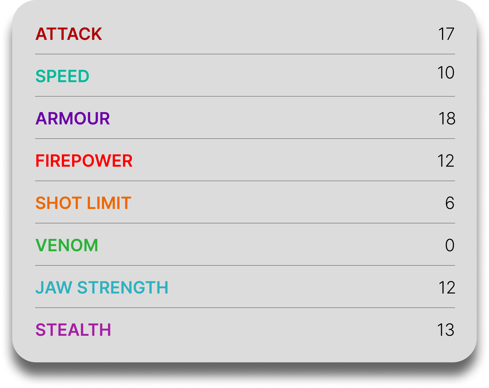

Crimson Goregutter
General Overview
The Crimson Goregutter is a massive dragon belonging to the Boulder Class. Known for its immense strength and imposing appearance, it is often mistaken for an aggressive beast, but in reality it is a gentle giant that prefers to be left alone. Despite its calm nature, when provoked it becomes a devastating force capable of destroying ships, structures, and anything standing in its path.

Physical Appearance
- Body & Color: It has a huge, heavy body typically colored in crimson tones with purple details and a lighter underside.
- Head & Face: Its head is short and broad, crowned with massive metallic antlers resembling those of a moose.
- Appendages: It has four strong, sturdy legs built to support its enormous weight and power.
- Wings & Tail: Its tail ends in a large axe-shaped blade used for both offense and defense, while its wings allow it to move despite its size.
Abilities and Combat
- Molten Lava: It can launch streams of molten lava from its mouth, similar to other Boulder Class dragons.
- Blazing Antlers: It can coat its fireproof antlers in lava and charge enemies with explosive force.
- Immense Strength: Its sheer size allows it to smash structures, break ships, and overpower most opponents.
- Axe Tail: Its tail acts like a massive battle axe, capable of knocking out enemies and cutting through obstacles.
- War Cry: It can emit a loud, ear-splitting call used to communicate over long distances.
- Durability: Its thick body and size make it extremely resistant to physical attacks.
Behavior and Personality
- Intelligence: It is aware and capable of forming strong bonds with those who help or protect it.
- Temperament: Despite its terrifying appearance, it is generally calm and peaceful unless provoked.
- Behavior: It prefers solitude and avoids unnecessary conflict, but reacts aggressively when threatened.
- Loyalty: It is highly protective and will defend those it trusts with incredible force.
- Diet: Their diet consists mainly of typical Boulder Class foods such as rocks and minerals.